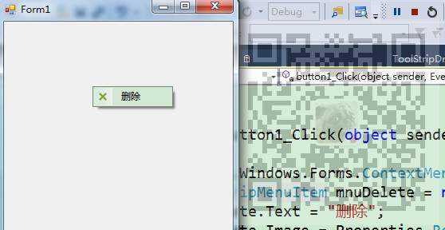
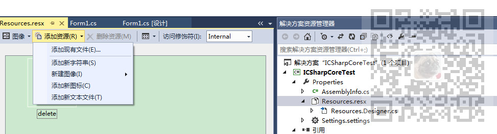

原文出处:本文由博客园博主霸道流氓提供。
原文连接:https://www.cnblogs.com/badaoliumangqizhi/p/12096628.html
原文连接:https://www.cnblogs.com/badaoliumangqizhi/p/12096628.html
场景
怎样在Winform程序中添加鼠标右键时使子选项显示图片。

注：
博客主页：
https://blog.csdn.net/badao_liumang_qizhi
关注公众号
霸道的程序猿
获取编程相关电子书、教程推送与免费下载。
实现
新建Winform程序，在Properties下的Resources下添加照片资源。

然后在窗体中拖拽一个Button，在Button的点击事件中
//声明鼠标右键菜单
System.Windows.Forms.ContextMenuStrip ctxMenu = new System.Windows.Forms.ContextMenuStrip();
//设置右键子选项
ToolStripMenuItem mnuDelete = new ToolStripMenuItem();
//设置子选项的文本
mnuDelete.Text = "删除";
//设置子选项的照片
mnuDelete.Image = Properties.Resources.delete;
//将子选项添加到右键菜单
ctxMenu.Items.Add(mnuDelete);
//获取Button按钮
Button button = sender as Button;
//使右键菜单显示并设置显示位置
ctxMenu.Show(button, new Point(0, 0));